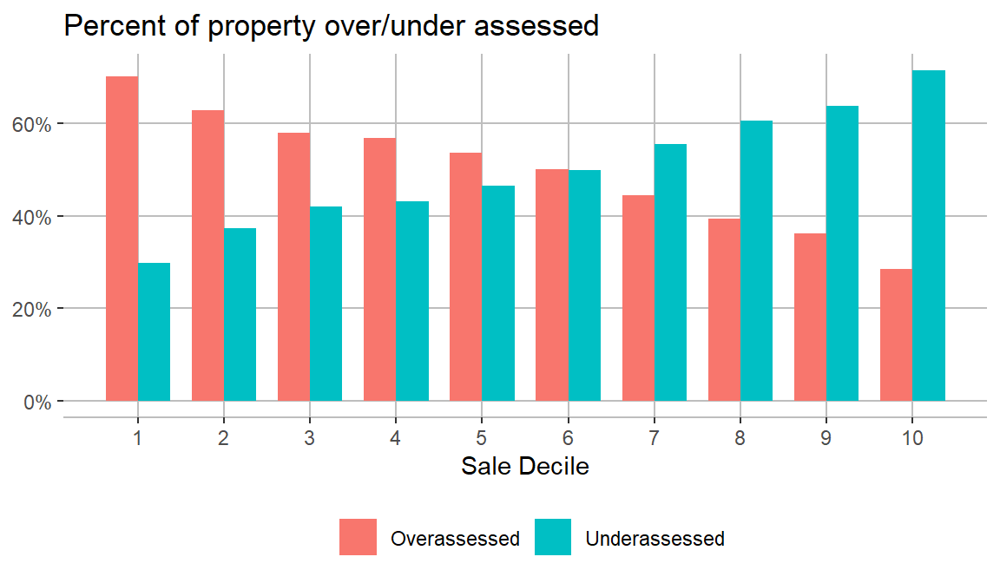

Chapter 1: Defining the problem
Contents
Chapter 1: Defining the problem#
Before diving into any analysis work, it is really important to realize the value of defining and understanding the context of the problem. There’s tonnes of data being collected every moment we speak, in various forms. The influx of data is so high that we generated 79 zettabytes (That’s 79 followed by 21 zeros!) of data worldwide in 2021 as storage got cheaper and efficient. However, collecting, storing and assembling a team of data experts comes at a cost and therefore, it is important to realize what data needs to be collected in context of th organizational need and adherence to privacy laws.
Note, that the purpose here is not to collect data for the sake of being a data savvy enterprise, but it is important to ensure that the collected data adds value to the organizations goals. Similarly, applying state-of-the-art learning algorithms only bear fruit if it creates an actionable outcome for the organization. However, it is also important to understand the pitfalls of incorrect interpretation due to bias and corruption in data.
Data science project failure can often be attributed to poor problem definition, but early intervention can prevent it. An MIT Sloan study suggests that too often, teams skip right to analyzing the data before agreeing on the problem to be solved. This lack of initial understanding guarantees that many projects are doomed to fail from the very beginning. (REF: MIT Sloan Review) Therefore, it is highly essential to work on the problem statement before and then move forward to diving into data. Also, it is important to make sure the metric that your organization is tracking. Is your company seeking to improve customer retention? If so, what do they need to measure? Or if a non-profit project needs to evaluate the impact of their sanitation program on health outcomes, what should it collect and analyze? Certainly, answering these questions before in presence of people with contextual knowledge of the problem is crucial for the success of any data science project.
Guided Practice#
We’ll now walk through a real-world project of Traffic Stops in Chicago. The purpose of this guided exercise is to make sure that you understand how can we assess a problem, clearly define it, understand what to measure and track the right metrics.
The Chicago Police Department (CPD) increased traffic stops by seven folds to around 600 thousand from 2015 through 2019. While the CPD claims that the purpose of traffic stops is to detect crime in the city, especially the West and the South sides, there is skepticism in this. In recent years, jurisdictions around the country have taken steps to address racially disparate and ineffectual traffic stops; meanwhile, Chicago continues its heavy use of traffic stops with no clear traffic safety or public safety benefit.
This has raised several concerns over the effectiveness of these stops as well as indicated racial profiling. Your job here is to think about what data can be collected and what sort of analysis can be done to either validate or invalidate both the idea that there is existence of racial profiling in the stops and that these increased stops are ineffective.
Think about how can we define the problem? What data do we need to have and what contextual knowledge do we require. Also address what precise metric do we need to track in order to validate or nullify the objections raised on the CPD.

One of the first question that we need to have a clear-cut answer for is, what is the social concern we’re trying to solve? A simple answer that we can come up based on the description provided is that our goal is to identify if police officers are involved in racial profiling. We have to answer if the police is being racist while making a traffic stop. Another goal that the project is trying to solve, apart from promoting racial justice, is to see if these stops are effective and improving public safety? Is the increase in number of stops any way reducing the crime in the city?
The next aspect we need to think about is how can we actually make sure that racial profiling is increasing or the effectiveness of stops is decreasing. For that we’ll select a metric for each case that we’ll track to reach to our hypothesis. If we’re considering to check the existence of racial profiling, we might want to have a look at the ratio of one particular race being stopped to other groups. For example, we can compare the ratio of black drivers stopped to the ratio of white drivers. Are they being stopped propotionately? If the ratios vary significanty, it probably hints to a problem which might need further investigation. Similarly, to account for the effectiveness of stops, we might check something as the hit rate. We will check if the percentage of those stopped were actually potential suspects? And has this number increased over time with increasing number of stops? We can also check how much the hit rates vary accross neighborhoods and race groups to identify any potential bias with search.
We defined the problem and we know the set of metrics we need to look out for. Now its time to identify what data do we need to gather for this purpose. Here we have to clearly define what specific variables and data points might be required that can be related with the metrics we’re tracking and can help us in indentifying the patterns we’re in search for. In this case, one primary information that we need for each stop is to know the race of the driver stopped. Apart from this, it will be valuable to have the vehicle type, time and place of the stop made (the more granular the place details, the better we can segment by neighborhoods) and primarily the result of the search. With that it is important to identify where we’re required to collect this data from and how should the data be grouped. Do we need to get data for each individual stop for our analysis or is it sufficient to get aggregated data for a neighborhood to test our hypothesis.
Finally, we need to mark down some important considerations and caveats that can affect are result. going back to what we mentioned in the beginning of this section, this requires contextual knowledge and it’ll be essential to discuss it with someone who knows the problem really well. In this case, we might need to consider if we can use data provided by Chicago Police Department or shall we look into some impartial source. Is it fine to have a survey data with an observer making notes of every stop? Additionally, we might also have to control for factors such as time of day. Is the dispropotion in the stops being made actually because of race or is it because of the time of day that is correlated to a race. For eg. there might be a high number of stops made around 8 pm where the driver is of hispanic origin, this could be because of a particular profession associated with this race that causes a large number of drivers from this race to be driving at that point of time.
Exercise 1.1: Property Tax project Chicago#
Let’s apply the principles we learnt regarding data science problem definition to Property Tax Fairness project
Brief#
Property taxes represent the single largest source of own-source revenue for America’s local governments. Cities, counties, school districts, and special districts raise roughly $500 billion per year in property taxes, roughly 70 percent of local taxes. Whether residents rent or own, property taxes impact everyone.
In many cities, however, property taxes are also inequitable: low-value properties face higher tax assessments, relative to their actual market values, than do high-value properties. This tax regressivity disproportionately burdens lower-income residents. The relationship between assessments and sale prices is regressive if less valuable homes are assessed at higher rates (relative to the value of the home) than more valuable homes.
The plot below shows the share of properties in each decile that were overassessed or underassessed, relative to the median rate of assessment. That is, a property is classified as overassessed if its sales ratio is above the median sales ratio for the jurisdiction, and classified as underassessed if its sales ratio is below the median. If errors were made randomly, each decile would have 50% of properties overassessed and 50% underassessed. When lower value homes are more likely to be overassessed than higher value homes, it is evidence of regressivity. In Cook County, Illinois, 70% of the lowest value homes are overassessed and 29% of the highest value homes are overassessed.

Think about the property tax fairness issue in the way we analyzed the Polic stops problem for Chicago. The following exercise offers the questions to ponder over. Go through each of them and think about how would you answer each. There are no right or wrong answers for this. We have provided some hints on what can be the most suitable approach to anwer these questions. Use them only after you’ve given considerable thought to each questions
1) What’s the social concern here that we’re trying to solve?
2) What’s the impact/metric we’re using to measure this?
3) Can data help us to solve this problem? And how?
4) What do we need to consider while collecting this data?
Solutions:#
Hint:
Unfair assessments of property
Discrimination resulting in widening of wealth inequality
Targeting neighborhoods with minority populations primariy resulting into evictions and homelessness
Hint:
In short: Trying to measure the difference between Sale price (Market value) and assessed value of a property by the assessors office.
The standard approach for evaluating the quality and fairness of assessments is through a sales ratio study (International Association of Assessing Officers 2013). A property’s sales ratio is defined as the assessed value divided by the sale price. A sales ratio study evaluates the extent of regressivity in a jurisdiction, along with other aspects of assessment performance, by studying sales ratios for properties that sold within a specific time period. A system in which less expensive homes are systematically assessed at higher sales ratios than more expensive homes is regressive.
Hint:
Collect data for sales value of a house in an assessment year and the corresponding assessment value.
If there’s no sale price, use previous years sale or features of the house to estimate the market value.
Compare the assessed value with the original or the estimated sales value
Hint:
Verify if a sale price is legitimate (not gift or mortgage payment)
Make sure its an “Arm’s length” sale
Controls for factors such as new developments and neighborhood median price
References:#
ref: https://sloanreview.mit.edu/article/framing-data-science-problems-the-right-way-from-the-start/
https://online.datasciencedojo.com/blogs/covid19-dunning-kruger-effect/